💰
Budget Est.
₩40,000–60,000
You land on Jeju around 2 PM — enough time to settle in, shake off the journey, and let the island ease you in gently. No agenda, no alarms. Walk the volcanic rock streets of Jeju City, find a tangerine juice, and save your appetite for Dongmun Market after dark.
LunchAirport food court or on board
DinnerDongmun Market street food
Arrive Jeju Airport
~2:00 PM — Taxi to hotelArrival
Your first breath of island air — volcanic rock walls, tangerine trees, sea
Jeju's airport is tiny and friendly — bags, taxi, and you're out in 20 minutes. The island greets you with clean air and unhurried roads lined with stone walls and citrus groves. Drop your bags, freshen up, and let the afternoon be yours.
Practical tips
Kakao T app is the easiest way to hail taxis — download before you land
Central Jeju City hotels are the best base for your Jeju nights
Most hotels allow early bag storage if your room isn't ready yet
Jeju City Afternoon Wander
3:30 PM — 2 hoursExplore
Chilseong-ro street, tangerine shops, volcanic stone alleys
There's no single landmark here — just the pleasure of arriving somewhere new. Walk Chilseong-ro, Jeju's main pedestrian street. Browse the shops selling Jeju tangerine cosmetics, black sesame crackers and hand-dried seaweed. Stop at one of the tiny local cafés for a tangerine latte. This is your gentle introduction to island life.
Tips
Chilseong-ro is fully pedestrianised — park the taxi and walk
Pick up a Jeju tangerine chocolate box here — cheaper than the airport
If tired, this is a great time to nap before the evening market energy
Dongmun Traditional Market
7:00 PM — EveningNight Market
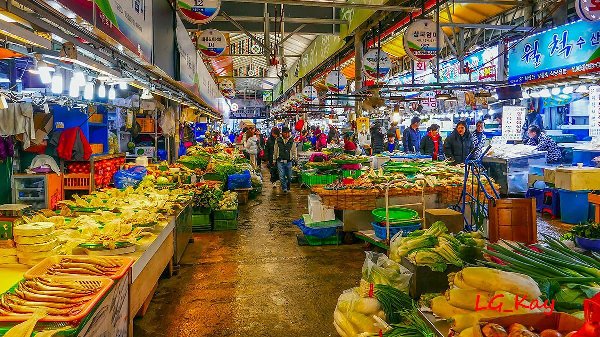
Jeju's oldest market, alive after dark — since 1945
Dongmun has been the beating heart of Jeju City since 1945. By night, Gate 8 transforms into a glowing corridor of street food stalls — vendors calling out, seafood sizzling, the smell of hotteok drifting through the crowd. Your first Korean street food moment: don't rush it.
What to eat
Jeju black pork skewers (흑돼지) — the island's signature ingredient
Fresh tangerine juice — Jeju grows the best in Korea
Hotteok — sweet stuffed pancakes, crispy outside, molten inside
Cash only at most stalls — bring ₩30,000–50,000 for a relaxed evening
🌊
Afternoon
Bijarim → Aewol
This is the day that earns Jeju its reputation. You'll wake in darkness, hike to the rim of a 100,000-year-old volcanic crater to watch the sun rise over the sea, descend into a lava tunnel carved by ancient rivers of fire, walk through a forest of 800-year-old trees, then follow the coastline to café-lined cliffs above the Pacific. It's a lot — and every moment is worth it.
BreakfastConvenience store onigiri + coffee (before 5 AM departure)
LunchRestaurant near Manjanggul — haemul jjigae (seafood stew)
DinnerDongmun fire show night — grilled lobster & crab tteokbokki
Pre-dawn Departure to Seongsan
5:00 AM — Taxi ~40 minEarly Start
Beat the crowds to Jeju's most photographed sunrise spot
The drive east in pre-dawn darkness is atmospheric — coastal road, the sea invisible but present. Book your taxi the night before via Kakao T. Grab a convenience store onigiri and coffee before you leave — you'll be walking on an empty stomach otherwise.
Tips
Book Kakao T taxi the night before, stating 5 AM pickup
Wear layers — pre-dawn at the coast is cool even in June
Convenience store across from Dongmun Market opens 24 hours
Seongsan Ilchulbong — Sunrise Peak
5:30 AM — 2 hoursUNESCO Hike
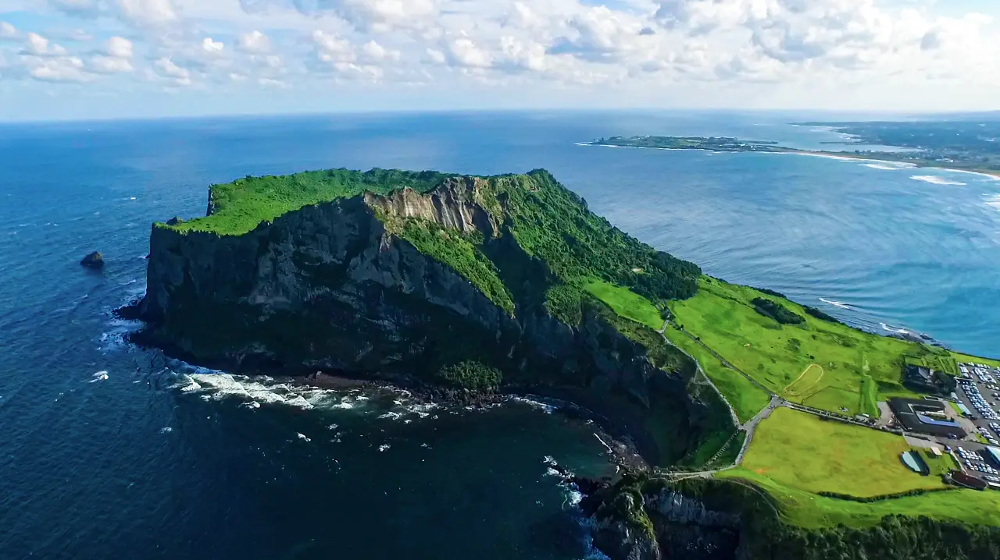
Sunrise over a 100,000-year-old volcanic crater — ₩5,000 entry
Seongsan Ilchulbong erupted from the sea 100,000 years ago and stands 182 metres tall, its vast crater still intact. The climb is only 20–25 minutes but steep. At the top, the crater stretches impossibly green below you, and beyond it the East China Sea lights up as the sun breaks the horizon. June sunrise is around 5:20 AM — be at the gate early.
Tips
Gates open 5:00 AM — arrive right at opening for the best light
Wear sport shoes — the steps are uneven and can be slippery with morning dew
Entry: ₩5,000 per person
The view looking back toward the coast is as stunning as the crater view
Udo Island — Optional Morning Detour
8:30 AM — 2 hoursIsland
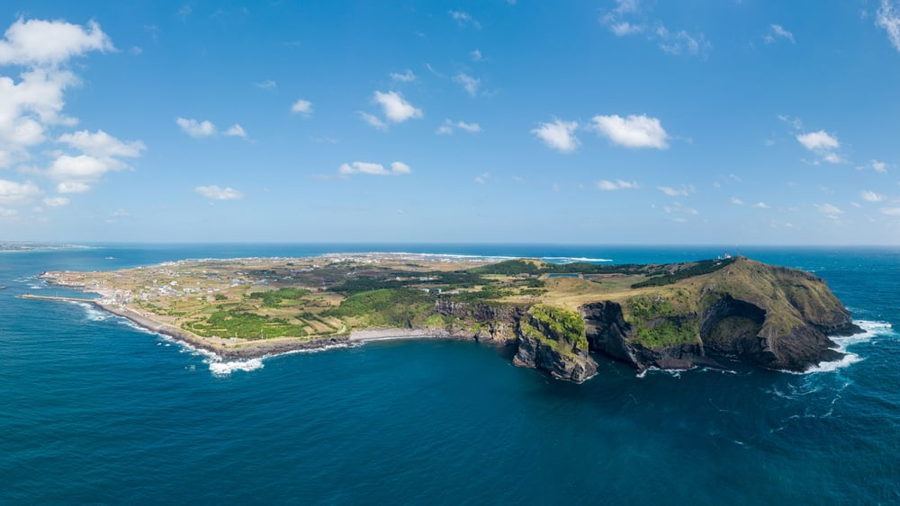
Tiny island off Seongsan: white coral beach & peanut ice cream
Just 15 minutes by ferry from Seongsan port, Udo is a quiet island famous for its snow-white Hongjo Beach and haenyeo diving women culture. A quick loop by electric bike is magical after the sunrise hike — but skip it today if you want to keep energy for Bijarim and Aewol later.
Tips
Ferry from ~8 AM — ₩6,500 round trip, last return ferry 6 PM
Consider skipping today to keep energy for the afternoon Bijarim → Aewol combo
If you go: peanut soft-serve ice cream on the island is mandatory
Manjanggul Lava Tube
11:00 AM — 1.5 hoursUNESCO Cave
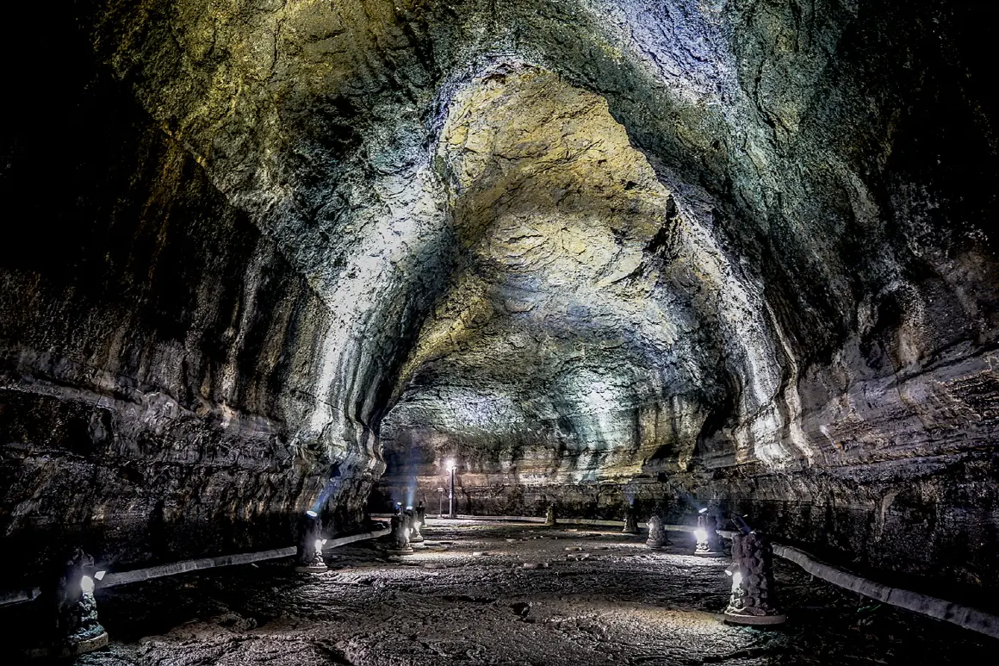
One of the world's longest lava tubes — cool 18°C underground
Ancient lava rivers carved this tunnel through the earth as the outer layers cooled and hardened. Today you walk 1 km through that tunnel — cathedral-high ceilings, frozen lava shelves, and at the far end the world's largest lava column at 7.6 metres tall. The temperature drops 10°C the moment you enter. After the morning heat, it feels like stepping into another dimension.
Tips
Entry ₩4,000 per person
Bring a light jacket — 18°C feels cold after sweating on the sunrise hike
Wear closed shoes — the floor is raw volcanic rock, uneven and sometimes wet
Bijarim Healing Forest
2:30 PM — 1.5 hoursAncient Forest
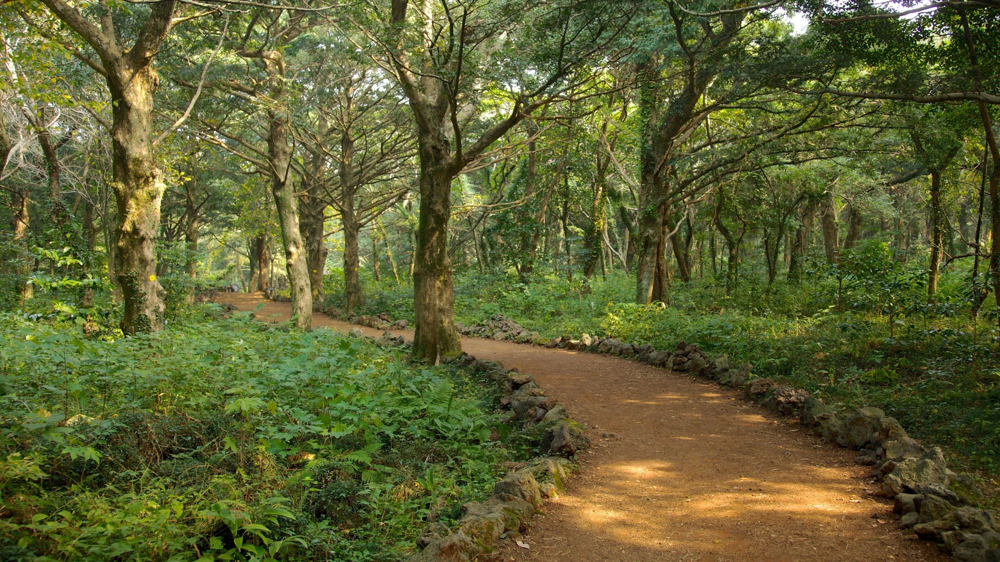
800-year-old nutmeg trees — Korea's only bija forest, sacred and silent
Bijarim is the only nutmeg forest in Korea. The trees — some over 800 years old and 25 metres tall — grow with an eerie symmetry, their roots knuckled into dark volcanic soil. Visitors walk in near-silence here. The short 30-minute loop captures all the magic. After the underground drama of Manjanggul, the forest feels like the island breathing.
Tips
Entry: ₩1,500, opens 7 AM
Take the 30-minute course — shorter trail hits the most beautiful section
Put your phone away and actually look at the trees
Aewol Handam Coastal Walk
4:30 PM — 2.5 hoursCoastal Trail
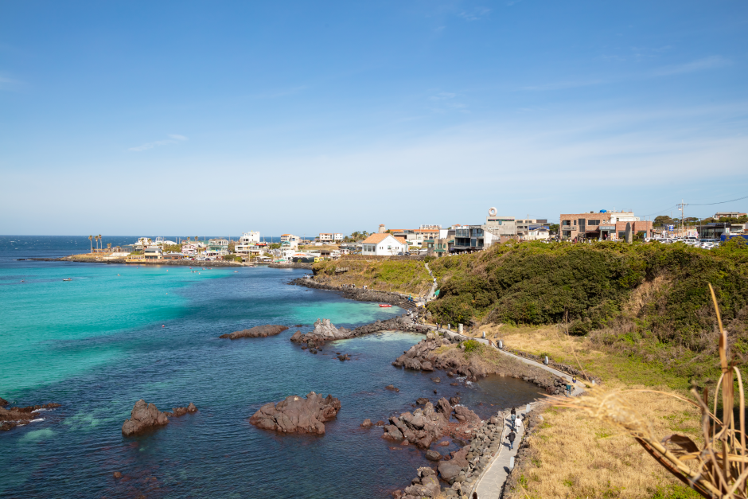
Volcanic coastline, old windmills, and Jeju's most beloved café strip
The Aewol coastal trail runs along raw black volcanic rock at the edge of the sea, past old windmills that have turned here for generations. As you reach the Aewol café district, the trail opens into a curved street of independent coffee shops — each one perched above the water. The 4:30–7:00 PM window catches the golden hour light over the ocean. Sit down. Watch the waves. Stay longer than you planned.
Tips
4:30–7:00 PM is the golden hour window — perfect timing today
Allow 2.5 hours for a full walk and a long café stop
Café Monsant and Caffe Bora are both on this strip — worth the stop
Wear comfortable shoes — volcanic rock path has uneven sections
Dongmun Market — Fire Show Night
7:30 PM — EveningNight Market
Second visit — grilled lobster & the famous tteokbokki fire show
Tonight you know exactly what you're doing. Head straight for the fire show stall where the vendor performs a theatrical cooking display with crab tteokbokki and grilled lobster. The crowd gathers, the flames go up, and the food is genuinely excellent. Last full night in Jeju — make it count.
What to order
Whole grilled lobster (랍스터) — theatrical and delicious
Crab tteokbokki — the fire show is the main performance
Best after 7:30 PM when all stalls are running at full energy
Your last Jeju morning is slow and easy — a quick market browse, check out, and a 55-minute domestic hop that takes you from volcanic island silence to the buzzing, neon-lit density of Korea's 10-million-person capital. By afternoon you're already wandering Seoul's most beloved artisan street. By evening, you're deep in one of the city's most legendary food experiences.
BreakfastCafé near hotel or hotel breakfast
LunchGimpo Airport on arrival
DinnerGwangjang Market — full food crawl
Maeil Olle Market — Quick Morning Browse
9:00 AM — 45 minLocal Market
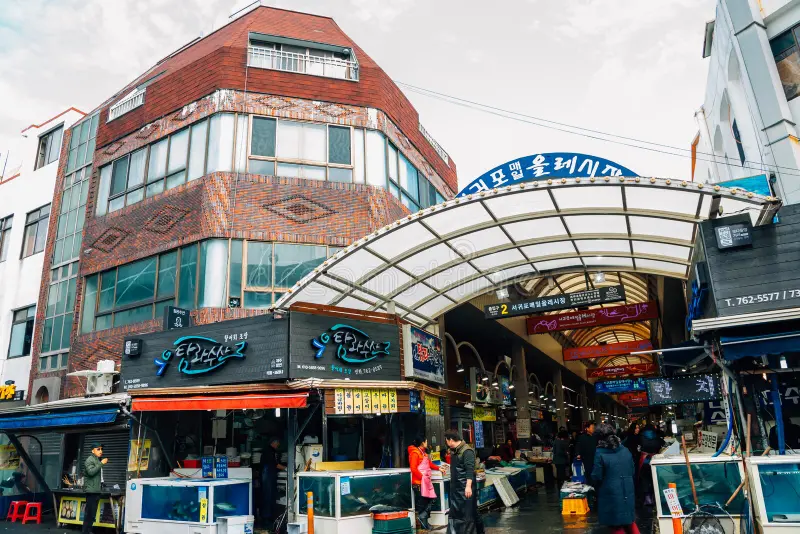
The market Jeju locals actually shop at — modest, honest, unhurried
A short morning stop before you head to the airport. This is not a tourist market — it's where Jeju residents buy their fish and produce. Grab a shrimp pancake and a coffee, soak up the island one last time, then let it go.
Tips
Shrimp pancake at entrance stalls — crispy, fresh, perfect last Jeju bite
Cash only — bring ₩10,000–15,000 for a light browse
Be back at hotel by 10:30 AM to check out and head to airport comfortably
Check Out & Fly to Seoul Gimpo
12:00 PM — ~55 min flightDeparture
Short 1-hour hop from Jeju to Seoul — buy last souvenirs before boarding
Jeju Airport is wonderfully small and calm. Domestic security takes 10 minutes. Buy one last bag of Jeju tangerine chocolate at the duty-free kiosks before you board — far cheaper here than anywhere in Seoul. Gimpo Airport lands you in central Seoul faster than Incheon.
Tips
Gimpo (GMP) is closer to Seoul centre than Incheon — at your hotel by 2 PM
Buy Jeju-specific souvenirs here: tangerine chocolate, black sesame crackers
Kakao T works perfectly in Seoul from the moment you land
Check In — Seoul Hotel
2:00 PM — Freshen UpCheck-in
Base yourself in Myeongdong or Insadong for the Seoul days
For a couple, the sweet spot is Myeongdong (great for night market access) or Insadong (quieter, more cultural, walking distance to Day 4 sights). Check in, freshen up, and head straight out — Seoul is waiting.
Tips
Myeongdong: best for Day 5 Myeongdong night market proximity
Insadong: more atmospheric, 10 min walk to Bukchon and Gyeongbokgung
Get a SIM or pocket WiFi at Gimpo if you haven't already
Insadong Culture Street
3:30 PM — 2 hoursArts District
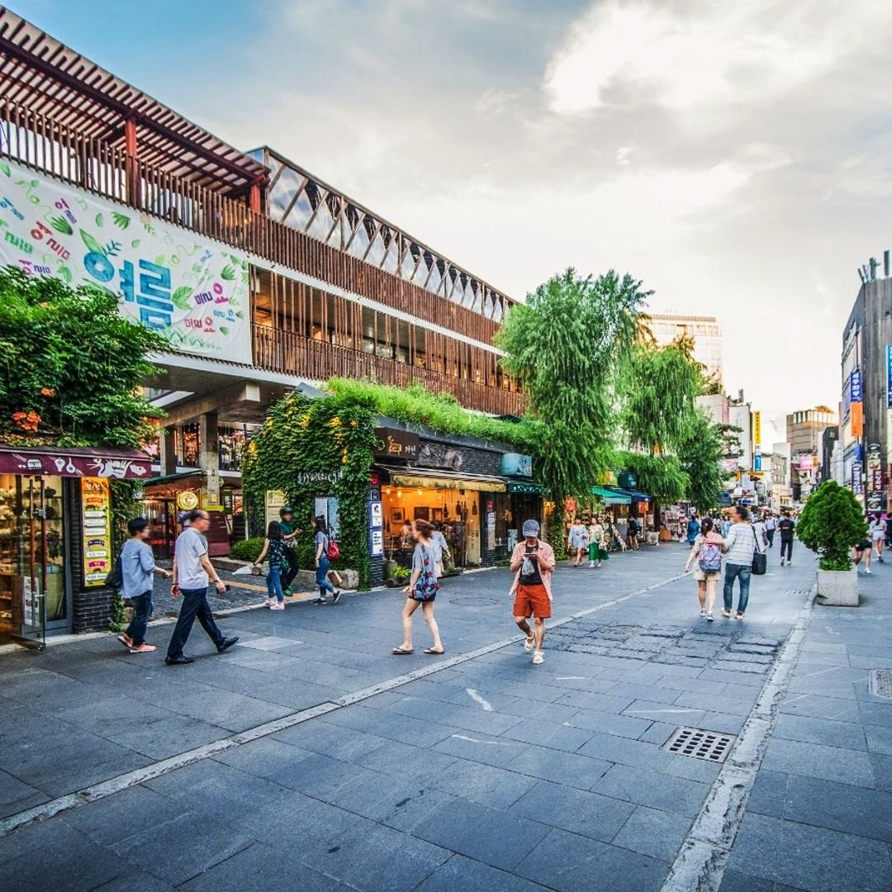
The street that refused to become a mall — galleries, tea houses, pottery
While most of Seoul's traditional streets were bulldozed for glass towers, Insadong held on. It's a long pedestrian street lined with art galleries, traditional tea houses, celadon pottery shops and calligraphy stalls. Hidden inside Ssamziegil courtyard is a winding spiral walkway of independent studios. Your first real taste of cultural Seoul after the island.
Tips
Ssamziegil courtyard: entrance at 44 Insadong-gil — don't miss the spiral walkway
Best souvenir: handmade hanji notebooks or small celadon pieces
Try egg bread (계란빵) from street carts — warm, eggy, comforting
Gwangjang Market — Dinner
6:00 PM — EveningHistoric Market
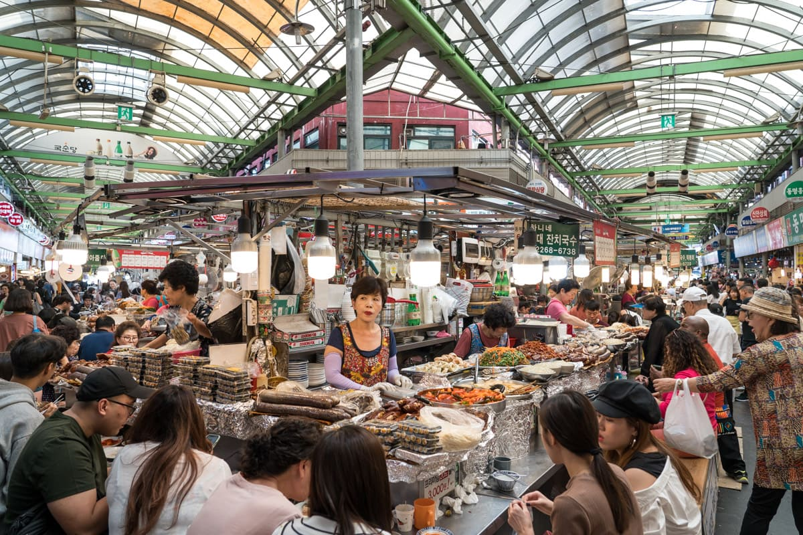
Seoul's oldest covered market, open since 1905
Gwangjang Market has been feeding Seoul since 1905. The central food hall is lined with grandmother vendors who have been making the same dishes for decades. The most famous: bindaetteok — thick mung bean pancakes fried crispy on a cast-iron griddle, best eaten with makgeolli rice wine. At the far entrance, a stall always has a 30-person queue for its twisted glutinous rice donut. Get in it.
Must-eat list
Bindaetteok (mung bean pancake) + makgeolli — the definitive Gwangjang combo
Twisted rice donut at the main entrance — tiny, cheap, perfect
Mayak gimbap — mini rolls with mustard dipping sauce, addictive
Yukhoe — Korean beef tartare if you're feeling adventurous
Cash only at most stalls — bring ₩40,000–60,000
👘
Highlight
Hanbok Free Entry
Today Seoul reveals its depth. You'll walk through a 15th-century royal palace still standing in the heart of a modern megacity, wander hillside alleyways where traditional wooden homes have survived centuries of war and demolition, then end the night eating skewers in a market that lights up like a carnival. Rent a hanbok at the palace gate — it costs ₩15,000 and the photos will last forever.
BreakfastHotel or café near accommodation
LunchNear Bukchon — bibimbap or sundubu jjigae
DinnerMyeongdong Night Market — full street food run
Gyeongbokgung Palace
9:00 AM — 2.5 hoursRoyal Palace
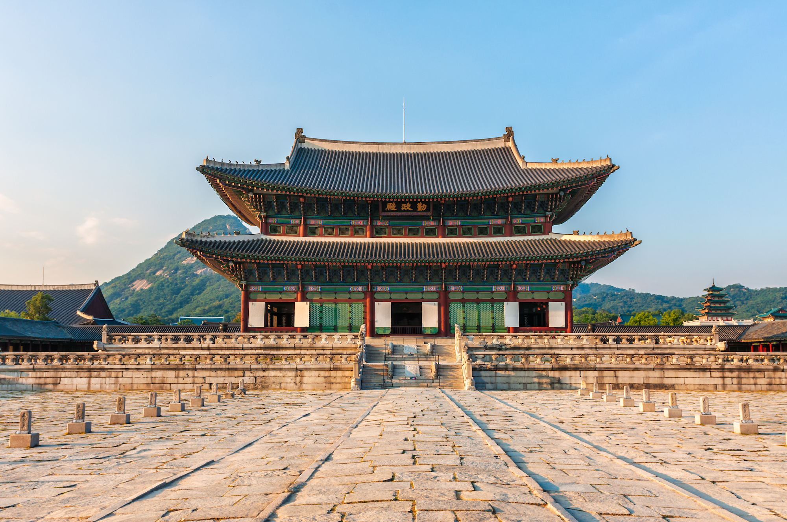
The Palace of Shining Happiness — built 1395, still breathtaking
Gyeongbokgung was the heart of the Joseon Dynasty for over 500 years — burned, rebuilt, demolished by Japanese colonial rule, rebuilt again. What stands now is a testament to cultural stubbornness: 13 restored structures on a 400,000 m² compound. Rent a Hanbok at the south gate — entry becomes free and your photos will be extraordinary.
Tips
Arrive early at 9 AM — tour groups flood in after 10
Hanbok rental: ₩15,000–20,000 for 2–3 hours — wearers enter FREE
Royal Guard Changing Ceremony: 10 AM and 2 PM at Gwanghwamun Gate
Closed Tuesdays — today is Wednesday, no problem
Bukchon Hanok Village
11:30 AM — 1.5 hoursLiving Heritage
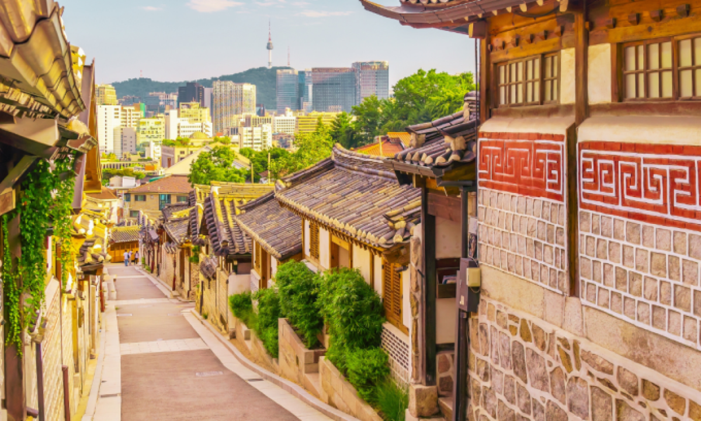
600-year-old wooden homes still lived in today
Bukchon sits on the hillside between two palaces and has been a residential neighbourhood for Korean aristocracy since the Joseon era. Around 900 hanok survive here today. The alleyway views from Bukchon-ro 11-gil are among the most photographed in all of Korea. Walk quietly — people actually live here.
Tips
10-minute walk from Gyeongbokgung's northeast gate — perfect morning combo
The iconic viewpoint: Bukchon-ro 11-gil (signed on maps)
Visiting hours: 10 AM – 5 PM — residential area, please keep noise down
Lunch Near Bukchon
1:00 PMLunch
Traditional Korean lunch after a morning of history
The streets between Bukchon and Insadong are lined with quiet Korean restaurants. Bibimbap or sundubu jjigae (soft tofu stew) hits the spot after a morning on your feet. Take your time — no rush this afternoon.
Recommendations
Tosokchon near Gyeongbokgung: famous samgyetang (ginseng chicken soup)
Any small restaurant on Bukchon-ro side streets — look for the lunch set menus
Budget ₩12,000–18,000 per person for a proper sit-down lunch
Cheonggyecheon Stream — Afternoon Walk
2:30 PM — 1 hourCity Walk
A hidden stream running through the heart of Seoul, below street level
Cheonggyecheon is a 10 km stream that runs below the busy streets of central Seoul. The walkway alongside it is cool, shaded and surprisingly peaceful — a welcome contrast after the crowds of Bukchon. Couples walk here. Street art lines the walls. It's one of Seoul's best-kept slow secrets.
Tips
Enter near Gwanghwamun area — walk east for 30–45 minutes then exit
Free to walk, open 24 hours — best in afternoon shade
Some sections have small waterfalls and lantern installations
Myeongdong Night Market
6:30 PM — Late NightNight Market
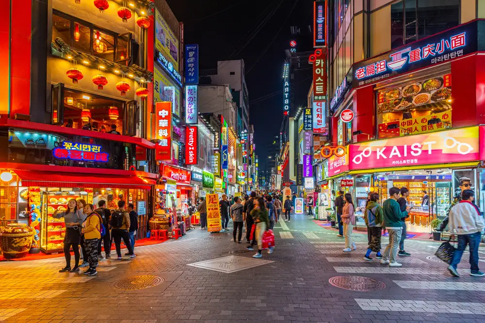
Seoul's most electric street food strip — open until 1 AM
Myeongdong by day is a shopping district. By night it's a different animal entirely. From 6 PM the vendors set up — hundreds of them down the main pedestrian street and into side lanes. Food is louder here than anywhere else in Seoul: vendors call out, giant portions steam in the air, tourists and locals queue side by side for the same skewers.
Must-eat list
Tanghulu — candy-coated fruit skewers, essential Myeongdong experience
Cheese corn dog — look for the queue, it's there for a reason
Haemul pajeon (seafood scallion pancake) from side-street stalls
Tteokbokki — spicy rice cakes, the quintessential Korean street snack
Cash preferred — some carts accept card, most don't
🛍️
Shopping
Indie Boutiques
No palaces today — just Seoul in its modern, youthful form. Start above the city on Namsan Mountain with a panorama of the entire Seoul basin. Drop down into Hongdae, the university district that invented Korean indie culture — street performers, pop-up galleries, and boutiques you won't find anywhere else. End the night the way every Seoul trip should: at a charcoal grill, with samgyeopsal and soju.
BreakfastHotel or café near accommodation
LunchHongdae area — Korean fried chicken or bibimbap
DinnerKorean BBQ — samgyeopsal or galbi with soju
Namsan Tower (N Seoul Tower)
9:00 AM — 2 hoursCity Views
360° panorama of Seoul from 480 metres — best morning clarity
Namsan is the mountain at Seoul's heart, and N Seoul Tower sits at its summit. The cable car ride up is half the experience. At the top, Seoul spreads in every direction — Han River glinting to the south, the palace district to the north, skyscrapers stretching to the horizon. Morning is the clearest time. The famous padlocks attached to the fence by couples have been here for decades.
Tips
Cable car: ₩9,500 round trip from Myeong-dong 3-ga station area
Morning before 10 AM has the best air clarity and fewest crowds
The observation deck ticket is optional — the outdoor platform view is free
Bring a small padlock if you want to add to the Love Lock fence
Travel to Hongdae
11:30 AM — Metro Line 2Transit
Line 2 to Hongik University station — 20 minutes from Myeongdong
Hongdae is the creative heartbeat of Seoul — named for Hongik University, which trained generations of Korean artists. The streets around the university are alive with murals, pop-up art, buskers, and the best concentration of independent fashion in the city.
Tips
Metro Line 2: Euljiro 3-ga → Hongik University Station (~6 stops)
T-money card works on all Seoul metro lines — top up if needed
Hongdae Street Art & Shopping
12:00 PM — 3 hoursArts District
Seoul's indie heartbeat — street art, buskers and boutiques you can't find elsewhere
Hongdae rewards slow walking. Turn off the main road and into the side streets — you'll find hand-illustrated clothing stores, vinyl record shops, ceramic studios and the best independent coffee in Seoul. The weekend free market (Fri–Sun) fills a park with independent designers selling jewellery, prints and accessories. Buskers perform on every corner from noon onward.
Tips
The free market park (홍대 자유시장) is a 5-min walk from the station exit 9
Aha Life and Stylenanda are iconic Korean fashion stores in this area
Budget ₩50,000–100,000 if you plan to shop — easy to spend more
Every side alley has something worth finding — don't just walk the main street
Lunch in Hongdae
1:30 PMLunch
Korean fried chicken, bibimbap or army stew (budae jjigae)
Hongdae has exceptional food for every budget. Korean fried chicken (chimaek) at a rooftop spot is the classic Hongdae lunch. Or try budae jjigae — the "army stew" born after the Korean War, combining Korean staples with leftover American military ingredients. It's richer than it sounds and deeply comforting.
Recommendations
Kyochon or BBQ Chicken for classic Korean fried chicken
Budae jjigae: look for small basement restaurants near the university entrance
Budget ₩12,000–20,000 per person for a sit-down lunch
Korean BBQ Dinner
7:00 PM — Long EveningDinner
Samgyeopsal at a proper charcoal grill — the essential Seoul dinner
This is the meal every Korea trip builds toward. A charcoal grill in the centre of the table, thick slices of pork belly sizzling in their own fat, scissors to cut them, lettuce leaves to wrap them in, garlic and fermented paste on the side. Order soju. Wrap, eat, repeat. The evening will go long. Let it.
Tips
Mapo Sutbul Galbi near Mapo area: charcoal galbi with 30-year history
Hongdae has many excellent BBQ restaurants within walking distance
Samgyeopsal (pork belly) is the classic; galbi (short ribs) is the splurge
Budget ₩30,000–50,000 per person including soju and side dishes
Book ahead or arrive before 6:30 PM to avoid queues
⏰
Airport
3 hrs before flight
Every great trip has a goodbye ritual. Yours is standing at Gwanghwamun Gate in the soft morning light, the palace behind you and Seoul's skyline ahead, before the city wakes up. Then duty-free Korean snacks, a window seat, and the long reflection on six days that felt like much more.
BreakfastHotel breakfast or café near accommodation
SnackAirport duty-free — Korean snacks for the flight home
Gwanghwamun Gate — Morning Walk
9:00 AM — 45 minFarewell Stop
The great gate of Joseon, standing since 1395
Gwanghwamun is the main gate of Gyeongbokgung Palace and has survived Japanese colonial erasure, the Korean War, and six centuries of history. In the morning light, before tourist crowds arrive, it's quietly magnificent — stone and painted wood framed by the Bugaksan mountain and Sejongno boulevard stretching south. Take your best couple photo of the trip. Say goodbye to Seoul properly.
Tips
Open 24 hours — no entry fee for the gate area
Changing of guards at 10 AM if your flight allows time
The Sejong Story underground exhibition below the square is free and worth a quick look
Head to Incheon Airport
11:00 AM — Allow 3+ hoursDeparture
AREX express: Seoul Station → Incheon T1 in 43 minutes
The AREX express train from Seoul Station runs directly to Incheon Terminal 1 in 43 minutes — clean, cheap (₩9,500), and perfectly timed. Or taxi if you're carrying heavy luggage. Allow a full 3 hours before your international departure.
Best duty-free buys
Korean red ginseng — the gold-standard souvenir
Honey butter almonds — dangerously addictive, hard to find outside Korea
Choco Pies (big box) — the iconic Korean snack
Jeju tangerine snacks if you didn't buy enough on the island
One last Korean convenience store coffee before you board